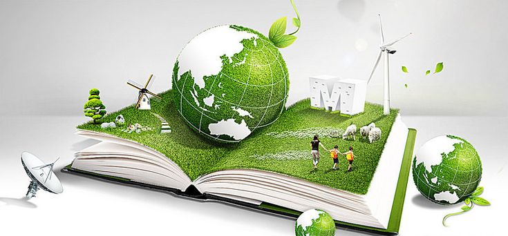

Japón ha invertido considerablemente en infraestructura de tratamiento de residuos, con más de 1,000 plantas de incineración con recuperación de energía. Además, se destinan más de 2,291 mil millones de yenes anualmente para este fin.
En el ámbito educativo, el 44% de la población actual recibió educación ambiental en la escuela primaria, lo que demuestra un compromiso con la formación de conciencia desde edades tempranas.
